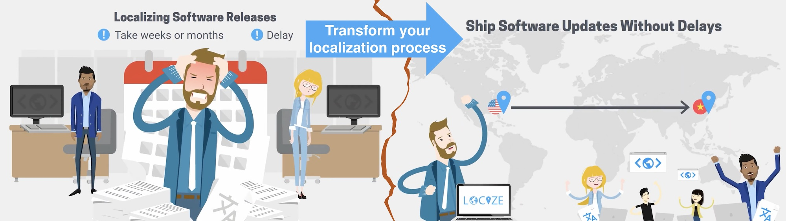

At Next.js Conf , the Vercel team announced Next.js 13 which introduced the new app directory / App Router paradigm .
Layouts , Server Components , Streaming and Support for Data Fetching .
Awesome! Next.js 13 has been released !
Afterthoughts... This sounds good, but looking more into the app directory / App Router paradigm, it looks like this is a completely new Next.js setup... not really comparable to the old one...
What does this mean regarding i18n?
Looking at the docs it seems our old approaches will not work anymore.
Nice features provided by next-i18next (and other Next.js related i18n modules) , like described here and here are not suited to this new app directory setup.
So you don't need next-i18next anymore!
A new approach In this section, you'll see how we can internationalize the new app directory with the use of i18next , react-i18next and i18next-resources-to-backend .
npm install i18next react-i18next i18next-resources-to-backend
Folder structure Language detection i18n instrumentation Language switcher Client side Bonus
1. Folder structure Let's start by creating a new folder structure that uses the language as url parameter. A so-called dynamic segment :
1 2 3 4 5 6 7 . └── app └── [lng] ├── second-page | └── page.js ├── layout.js └── page.js
The app/[lng]/page.js file could look like this:
1 2 3 4 5 6 7 8 9 10 11 12 import Link from 'next/link' export default function Page ({ params: { lng } } ) return ( <> <h1 > Hi there!</h1 > <Link href ={ `/${lng }/second-page `}> second page </Link > </> ) }
And the app/[lng]/second-page/page.js file could look like this:
1 2 3 4 5 6 7 8 9 10 11 12 import Link from 'next/link' export default function Page ({ params: { lng } } ) return ( <> <h1 > Hi from second page!</h1 > <Link href ={ `/${lng }`}> back </Link > </> ) }
Last the app/[lng]/layout.js file could look like this:
1 2 3 4 5 6 7 8 9 10 11 12 13 14 15 16 17 18 19 20 21 22 23 import { dir } from 'i18next' const languages = ['en' , 'de' ]export async function generateStaticParams ( return languages.map((lng ) => ({ lng })) } export default function RootLayout ({ children, params: { lng } } ) return ( <html lang ={lng} dir ={dir(lng)} > <head /> <body > {children} </body > </html > ) }
2. Language detection Now navigating to http://localhost:3000/en or http://localhost:3000/de should show something, and also the links to the second page and back should work, but navigating to http://localhost:3000 will return a 404 error.
Let's first create a new file app/i18n/settings.js:
1 2 export const fallbackLng = 'en' export const languages = [fallbackLng, 'de' ]
Then adapt the app/[lng]/layout.js file:
1 2 3 4 5 6 7 8 9 10 11 12 13 14 15 16 17 18 19 20 21 22 import { dir } from 'i18next' import { languages } from '../i18n/settings' export async function generateStaticParams ( return languages.map((lng ) => ({ lng })) } export default function RootLayout ({ children, params: { lng } } ) return ( <html lang ={lng} dir ={dir(lng)} > <head /> <body > {children} </body > </html > ) }
And finally create a middleware.js file:
npm install accept-language
1 2 3 4 5 6 7 8 9 10 11 12 13 14 15 16 17 18 19 20 21 22 23 24 25 26 27 28 29 30 31 32 33 34 35 import { NextResponse } from 'next/server' import acceptLanguage from 'accept-language' import { fallbackLng, languages, cookieName } from './app/i18n/settings' acceptLanguage.languages(languages) export const config = { matcher : ['/((?!api|_next/static|_next/image|assets|favicon.ico|sw.js).*)' ] } export function middleware (req ) let lng if (req.cookies.has(cookieName)) lng = acceptLanguage.get(req.cookies.get(cookieName).value) if (!lng) lng = acceptLanguage.get(req.headers.get('Accept-Language' )) if (!lng) lng = fallbackLng if ( !languages.some(loc =>`/${loc} ` )) && !req.nextUrl.pathname.startsWith('/_next' ) ) { return NextResponse.redirect(new URL(`/${lng} ${req.nextUrl.pathname} ` , req.url)) } if (req.headers.has('referer' )) { const refererUrl = new URL(req.headers.get('referer' )) const lngInReferer = languages.find((l ) => refererUrl.pathname.startsWith(`/${l} ` )) const response = NextResponse.next() if (lngInReferer) response.cookies.set(cookieName, lngInReferer) return response } return NextResponse.next() }
Navigating to the root path / will now check if there's already a cookie with the last chosen language, as fallback it will check the Accept-Language header and the last fallback is the defined fallback language.
3. i18n instrumentation Let's prepare i18next in the app/i18n/index.js file:
useTranslation call, because during compilation everything seems to be executed in parallel. Having a separate instance will keep the translations consistent.
1 2 3 4 5 6 7 8 9 10 11 12 13 14 15 16 17 18 19 20 21 import { createInstance } from 'i18next' import resourcesToBackend from 'i18next-resources-to-backend' import { initReactI18next } from 'react-i18next/initReactI18next' import { getOptions } from './settings' const initI18next = async (lng, ns) => { const i18nInstance = createInstance() await i18nInstance .use(initReactI18next) .use(resourcesToBackend((language, namespace ) => import (`./locales/${language} /${namespace} .json` ))) .init(getOptions(lng, ns)) return i18nInstance } export async function useTranslation (lng, ns, options = {} ) const i18nextInstance = await initI18next(lng, ns) return { t : i18nextInstance.getFixedT(lng, Array .isArray(ns) ? ns[0 ] : ns, options.keyPrefix), i18n : i18nextInstance } }
In the app/i18n/settings.js file we'll add the i18next options:
1 2 3 4 5 6 7 8 9 10 11 12 13 14 15 16 export const fallbackLng = 'en' export const languages = [fallbackLng, 'de' ]export const defaultNS = 'translation' export const cookieName = 'i18next' export function getOptions (lng = fallbackLng, ns = defaultNS ) return { supportedLngs : languages, fallbackLng, lng, fallbackNS : defaultNS, defaultNS, ns } }
Let's prepare some translation files:
1 2 3 4 5 6 7 8 9 10 . └── app └── i18n └── locales ├── en | ├── translation.json | └── second-page.json └── de ├── translation.json └── second-page.json
app/i18n/locales/en/translation.json:
1 2 3 4 { "title" : "Hi there!" , "to-second-page" : "To second page" }
app/i18n/locales/de/translation.json:
1 2 3 4 { "title" : "Hallo Leute!" , "to-second-page" : "Zur zweiten Seite" }
app/i18n/locales/en/second-page.json:
1 2 3 4 { "title" : "Hi from second page!" , "back-to-home" : "Back to home" }
app/i18n/locales/de/second-page.json:
1 2 3 4 { "title" : "Hallo von der zweiten Seite!" , "back-to-home" : "Zurück zur Hauptseite" }
Now we're ready to use that in our pages...
async this way we can await the useTranslation response.
app/[lng]/page.js:
1 2 3 4 5 6 7 8 9 10 11 12 13 14 import Link from 'next/link' import { useTranslation } from '../i18n' export default async function Page ({ params: { lng } } ) const { t } = await useTranslation(lng) return ( <> <h1 > {t('title')}</h1 > <Link href ={ `/${lng }/second-page `}> {t('to-second-page')} </Link > </> ) }
app/[lng]/second-page/page.js:
1 2 3 4 5 6 7 8 9 10 11 12 13 14 import Link from 'next/link' import { useTranslation } from '../../i18n' export default async function Page ({ params: { lng } } ) const { t } = await useTranslation(lng, 'second-page' ) return ( <> <h1 > {t('title')}</h1 > <Link href ={ `/${lng }`}> {t('back-to-home')} </Link > </> ) }
4. Language switcher Now let's define a language switcher in a Footer component:
app/[lng]/components/Footer/index.js:
1 2 3 4 5 6 7 8 9 10 11 12 13 14 15 16 17 18 19 20 21 22 23 24 25 import Link from 'next/link' import { Trans } from 'react-i18next/TransWithoutContext' import { languages } from '../../../i18n/settings' import { useTranslation } from '../../../i18n' export const Footer = async ({ lng }) => { const { t } = await useTranslation(lng, 'footer' ) return ( <footer style ={{ marginTop: 50 }}> <Trans i18nKey ="languageSwitcher" t ={t} > Switch from <strong > {{lng}}</strong > to:{' '} </Trans > {languages.filter((l) => lng !== l).map((l, index) => { return ( <span key ={l} > {index > 0 && (' or ')} <Link href ={ `/${l }`}> {l} </Link > </span > ) })} </footer > ) }
You see we can also use the react-i18next Trans component .
A new namespace:
app/i18n/locales/en/footer.json:
1 2 3 { "languageSwitcher" : "Switch from <1>{{lng}}</1> to: " }
app/i18n/locales/de/footer.json:
1 2 3 { "languageSwitcher" : "Wechseln von <1>{{lng}}</1> nach: " }
And add that Footer component to the pages:
app/[lng]/page.js:
1 2 3 4 5 6 7 8 9 10 11 12 13 14 15 16 import Link from 'next/link' import { useTranslation } from '../i18n' import { Footer } from './components/Footer' export default async function Page ({ params: { lng } } ) const { t } = await useTranslation(lng) return ( <> <h1 > {t('title')}</h1 > <Link href ={ `/${lng }/second-page `}> {t('to-second-page')} </Link > <Footer lng ={lng}/ > </> ) }
app/[lng]/second-page/page.js:
1 2 3 4 5 6 7 8 9 10 11 12 13 14 15 16 import Link from 'next/link' import { useTranslation } from '../../i18n' import { Footer } from '../components/Footer' export default async function Page ({ params: { lng } } ) const { t } = await useTranslation(lng, 'second-page' ) return ( <> <h1 > {t('title')}</h1 > <Link href ={ `/${lng }`}> {t('back-to-home')} </Link > <Footer lng ={lng}/ > </> ) }
🥳 Awesome, you've just created your first language switcher!
5. Client side So far we've created server side pages only.
Since client side react components can't async we need to do some adjustments.
Let's introduce the app/i18n/client.js file:
1 2 3 4 5 6 7 8 9 10 11 12 13 14 15 16 17 18 19 20 21 22 23 24 25 26 27 28 29 30 31 32 33 34 35 36 37 38 39 40 41 42 43 44 45 46 47 48 49 50 51 52 53 'use client' import { useEffect, useState } from 'react' import i18next from 'i18next' import { initReactI18next, useTranslation as useTranslationOrg } from 'react-i18next' import { useCookies } from 'react-cookie' import resourcesToBackend from 'i18next-resources-to-backend' import LanguageDetector from 'i18next-browser-languagedetector' import { getOptions, languages, cookieName } from './settings' const runsOnServerSide = typeof window === 'undefined' i18next .use(initReactI18next) .use(LanguageDetector) .use(resourcesToBackend((language, namespace ) => import (`./locales/${language} /${namespace} .json` ))) .init({ ...getOptions(), lng : undefined , detection : { order : ['path' , 'htmlTag' , 'cookie' , 'navigator' ], }, preload : runsOnServerSide ? languages : [] }) export function useTranslation (lng, ns, options ) const [cookies, setCookie] = useCookies([cookieName]) const ret = useTranslationOrg(ns, options) const { i18n } = ret if (runsOnServerSide && lng && i18n.resolvedLanguage !== lng) { i18n.changeLanguage(lng) } else { const [activeLng, setActiveLng] = useState(i18n.resolvedLanguage) useEffect(() => { if (activeLng === i18n.resolvedLanguage) return setActiveLng(i18n.resolvedLanguage) }, [activeLng, i18n.resolvedLanguage]) useEffect(() => { if (!lng || i18n.resolvedLanguage === lng) return i18n.changeLanguage(lng) }, [lng, i18n]) useEffect(() => { if (cookies.i18next === lng) return setCookie(cookieName, lng, { path : '/' }) }, [lng, cookies.i18next]) } return ret }
On client side the normal i18next singleton is ok. It will be initialized just once. And we can make use of the "normal" useTranslation hook. We just wrap it to have the possibility to pass in the language.
To align with the server side language detection we make use of i18next-browser-languagedetector and configure it accordingly.
We also need to create 2 versions of the Footer component.
1 2 3 4 5 6 7 8 . └── app └── [lng] └── components └── Footer ├── client.js ├── FooterBase.js └── index.js
app/[lng]/components/Footer/FooterBase.js:
1 2 3 4 5 6 7 8 9 10 11 12 13 14 15 16 17 18 19 20 21 22 23 import Link from 'next/link' import { Trans } from 'react-i18next/TransWithoutContext' import { languages } from '../../../i18n/settings' export const FooterBase = ({ t, lng } ) => { return ( <footer style ={{ marginTop: 50 }}> <Trans i18nKey ="languageSwitcher" t ={t} > Switch from <strong > {{lng}}</strong > to:{' '} </Trans > {languages.filter((l) => lng !== l).map((l, index) => { return ( <span key ={l} > {index > 0 && (' or ')} <Link href ={ `/${l }`}> {l} </Link > </span > ) })} </footer > ) }
The server side part continuous to use the async version, app/[lng]/components/Footer/index.js:
1 2 3 4 5 6 7 import { useTranslation } from '../../../i18n' import { FooterBase } from './FooterBase' export const Footer = async ({ lng }) => { const { t } = await useTranslation(lng, 'footer' ) return <FooterBase t ={t} lng ={lng} /> }
The client side part will use the new i18n/client version, app/[lng]/components/Footer/client.js:
1 2 3 4 5 6 7 8 9 'use client' import { FooterBase } from './FooterBase' import { useTranslation } from '../../../i18n/client' export const Footer = ({ lng } ) => { const { t } = useTranslation(lng, 'footer' ) return <FooterBase t ={t} lng ={lng} /> }
A client side page could look like this - app/[lng]/client-page/page.js:
1 2 3 4 5 6 7 8 9 10 11 12 13 14 15 16 17 18 19 20 21 22 23 24 25 26 27 'use client' import Link from 'next/link' import { useTranslation } from '../../i18n/client' import { Footer } from '../components/Footer/client' import { useState } from 'react' export default function Page ({ params: { lng } } ) const { t } = useTranslation(lng, 'client-page' ) const [counter, setCounter] = useState(0 ) return ( <> <h1 > {t('title')}</h1 > <p > {t('counter', { count: counter })}</p > <div > <button onClick ={() => setCounter(Math.max(0, counter - 1))}>-</button > <button onClick ={() => setCounter(Math.min(10, counter + 1))}>+</button > </div > <Link href ={ `/${lng }`}> <button type ="button" > {t('back-to-home')} </button > </Link > <Footer lng ={lng} /> </> ) }
With some translation resources:
app/i18n/locales/en/client-page.json:
1 2 3 4 5 6 7 { "title" : "Client page" , "counter_one" : "one selected" , "counter_other" : "{{count}} selected" , "counter_zero" : "none selected" , "back-to-home" : "Back to home" }
app/i18n/locales/de/client-page.json:
1 2 3 4 5 6 7 { "title" : "Client Seite" , "counter_one" : "eines ausgewählt" , "counter_other" : "{{count}} ausgewählt" , "counter_zero" : "keines ausgewählt" , "back-to-home" : "Zurück zur Hauptseite" }
And a link in our initial page - app/[lng]/page.js:
1 2 3 4 5 6 7 8 9 10 11 12 13 14 15 16 17 18 19 20 import Link from 'next/link' import { useTranslation } from '../i18n' import { Footer } from './components/Footer' export default async function Page ({ params: { lng } } ) const { t } = await useTranslation(lng) return ( <> <h1 > {t('title')}</h1 > <Link href ={ `/${lng }/second-page `}> {t('to-second-page')} </Link > <br /> <Link href ={ `/${lng }/client-page `}> {t('to-client-page')} </Link > <Footer lng ={lng}/ > </> ) }
...with translation resources:
app/i18n/locales/en/translation.json:
1 2 3 4 5 { "title" : "Hi there!" , "to-second-page" : "To second page" , "to-client-page" : "To client page" }
app/i18n/locales/de/translation.json:
1 2 3 4 5 { "title" : "Hallo Leute!" , "to-second-page" : "Zur zweiten Seite" , "to-client-page" : "Zur clientseitigen Seite" }
🎉🥳 Congratulations 🎊🎁
The result should look like this:
🧑‍💻 The complete code of an example app can be found here .
6. Bonus 
Connect to an awesome translation management system and manage your translations outside of your code.
Let's synchronize the translation files with locize .
This can be done on-demand or on the CI-Server or before deploying the app.
What to do to reach this step:
in locize: signup at https://locize.app/register and login
in locize: create a new project
install the locize-cli (npm i locize-cli)
in locize: add all your additional languages (this can also be done via API or with using the migrate command of the locize-cli)
Use the locize download command to always download the published locize translations to your local repository (app/i18n/locales) before bundling your app. example
Alternatively, you can also use the locize sync command to synchronize your local repository (app/i18n/locales) with what is published on locize. example
🎉🥳 Congratulations 🎊🎠I hope you’ve learned a few new things about i18n in the new app directory setup, Next.js , i18next , react-i18next , react-i18next , i18next-resources-to-backend and modern localization workflows .
So if you want to take your i18n topic to the next level, it's worth trying the localization management platform - locize .
The founders of locize are also the creators of i18next . So by using locize you directly support the future of i18next .
👍